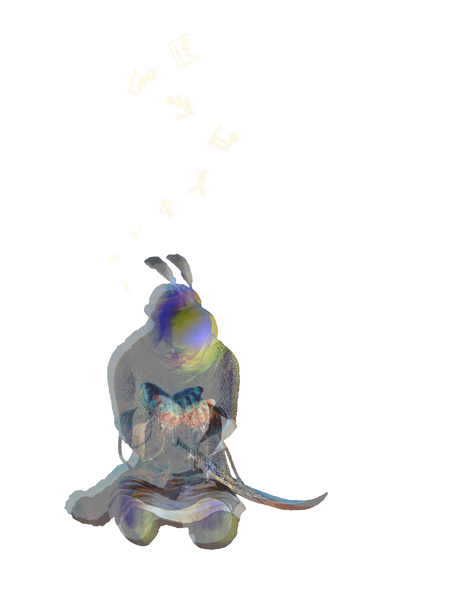

Suhrawardī, Shahrazūrī, and Beyond

Suhrawardī was an Islamic philosopher who lived in the 11th century. He is known as
al-maqtūl, meaning, the one who was killed, because he was executed on order of Saladin, at age 36, in
1191.
He spent his life figuring out a new system of philosophy.
